ALIFE 2026
What if we could ask for a better world, in plain language?
World Dynamics (Forrester, 1971): a classic hand-designed model of population, resources, and pollution. Now just ask:
- No equations to derive. No DYNAMO or STELLA to learn. No manual trial-and-error.
- CEDAR takes this sentence and autonomously evolves the system: ~30 minutes, $10–$50 per run.
* WORLD DYNAMICS W5 1 L P.K = P.J + (DT)*(BR.JK - DR.JK) 1.1 N P = PI 1.2 C PI = 1.65E9 2 R BR.KL = P.K * CLIP(BRN, BRN1, SWT1, TIME.K) * BRFM.K * BRMM.K * BRCM.K * BRPM.K 2.2 C BRN = 0.04 2.3 C BRN1 = 0.04 2.4 C SWT1 = 1970 3 A BRMM.K = TABHL(BRMMT, MSL.K, 0, 5, 1) 3.1 T BRMMT = 1.2 / 1 / 0.85 / 0.75 / 0.7 / 0.7 4 A MSL.K = ECIR.K / ECIRN 4.1 C ECIRN = 1 5 A ECIR.K = CIR.K * (1 - CIAF.K) * NREM.K / (1 - CIAFN) 6 A NREM.K = TABLE(NREMT, NRFR.K, 0, 1, 0.25) 6.1 T NREMT = 0 / 0.15 / 0.5 / 0.85 / 1 7 A NRFR.K = NR.K / NRI 8 L NR.K = NR.J + (DT)*(-NRUR.JK) 8.1 N NR = NRI 8.2 C NRI = 900E9 9 R NRUR.KL = P.K * CLIP(NRUN, NRUN1, SWT2, TIME.K) * NRMM.K 9.1 C NRUN = 1 9.2 C NRUN1 = 1 9.3 C SWT2 = 1970 NOTE EQUATION 42 CONNECTS HERE FROM EQ. 4 TO EQ. 9 10 R DR.KL = P.K * CLIP(DRN, DRN1, SWT3, TIME.K) * DRMM.K * DRPM.K * DRFM.K * DRCM.K 10.2 C DRN = 0.028 10.3 C DRN1 = 0.028 10.4 C SWT3 = 1970 11 A DRMM.K = TABHL(DRMMT, MSL.K, 0, 5, 0.5) 11.1 T DRMMT = 3 / 1.8 / 1 / 0.8 / 0.7 / 0.6 / 0.53 / 0.5 / 0.5 / 0.5 / 0.5 12 A DRPM.K = TABLE(DRPMT, POLR.K, 0, 60, 10) 12.1 T DRPMT = 0.92 / 1.3 / 2 / 3.2 / 4.8 / 6.8 / 9.2 13 A DRFM.K = TABHL(DRFMT, FR.K, 0, 2, 0.25) 13.1 T DRFMT = 30 / 3 / 2 / 1.4 / 1 / 0.7 / 0.6 / 0.5 / 0.5 14 A DRCM.K = TABLE(DRCMT, CR.K, 0, 5, 1) 14.1 T DRCMT = 0.9 / 1 / 1.2 / 1.5 / 1.9 / 3 15 A CR.K = P.K / (LA * PDN) 15.1 C LA = 135E6 15.2 C PDN = 26.5 16 A BRCM.K = TABLE(BRCMT, CR.K, 0, 5, 1) 16.1 T BRCMT = 1.05 / 1 / 0.9 / 0.7 / 0.6 / 0.55 17 A BRFM.K = TABHL(BRFMT, FR.K, 0, 4, 1) 17.1 T BRFMT = 0 / 1 / 1.6 / 1.9 / 2 18 A BRPM.K = TABLE(BRPMT, POLR.K, 0, 60, 10) 18.1 T BRPMT = 1.02 / 0.9 / 0.7 / 0.4 / 0.25 / 0.15 / 0.1 19 A FR.K = FPCI.K * FCM.K * FPM.K * CLIP(FC, FC1, SWT7, TIME.K) / FN 19.1 C FC = 1 19.2 C FC1 = 1 19.3 C FN = 1 19.4 C SWT7 = 1970 20 A FCM.K = TABLE(FCMT, CR.K, 0, 5, 1) 20.1 T FCMT = 2.4 / 1 / 0.6 / 0.4 / 0.3 / 0.2 21 A FPCI.K = TABHL(FPCIT, CIRA.K, 0, 6, 1) 21.1 T FPCIT = 0.5 / 1 / 1.4 / 1.7 / 1.9 / 2.05 / 2.2 22 A CIRA.K = CIR.K * CIAF.K / CIAFN 22.1 C CIAFN = 0.3 23 A CIR.K = CI.K / P.K 24 L CI.K = CI.J + (DT)*(CIG.JK - CID.JK) 24.1 N CI = CII 24.2 C CII = 0.4E9 25 R CIG.KL = P.K * CIM.K * CLIP(CIGN, CIGN1, SWT4, TIME.K) 25.1 C CIGN = 0.05 25.2 C CIGN1 = 0.05 25.3 C SWT4 = 1970 26 A CIM.K = TABHL(CIMT, MSL.K, 0, 5, 1) 26.1 T CIMT = 0.1 / 1.0 / 1.8 / 2.4 / 2.8 / 3 27 R CID.KL = CI.K * CLIP(CIDN, CIDN1, SWT5, TIME.K) 27.1 C CIDN = 0.025 27.2 C CIDN1 = 0.025 27.3 C SWT5 = 1970 28 A FPM.K = TABLE(FPMT, POLR.K, 0, 60, 10) 28.1 T FPMT = 1.02 / 0.9 / 0.65 / 0.35 / 0.2 / 0.1 / 0.05 29 A POLR.K = POL.K / POLS 29.1 C POLS = 3.6E9 30 L POL.K = POL.J + (DT)*(POLG.JK - POLA.JK) 30.1 N POL = POLI 30.2 C POLI = 0.2E9 31 R POLG.KL = P.K * CLIP(POLN, POLN1, SWT6, TIME.K) * POLCM.K 31.1 C POLN = 1 31.2 C POLN1 = 1 31.3 C SWT6 = 1970 32 A POLCM.K = TABHL(POLCMT, CIR.K, 0, 5, 1) 32.1 T POLCMT = 0.05 / 1 / 3 / 5.4 / 7.4 / 8 33 R POLA.KL = POL.K / POLAT.K 34 A POLAT.K = TABLE(POLATT, POLR.K, 0, 60, 10) 34.1 T POLATT = 0.6 / 2.5 / 5 / 8 / 11.5 / 15.5 / 20 35 L CIAF.K = CIAF.J + (DT/CIAFT)*(CFIFR.J * CIQR.J - CIAF.J) 35.1 N CIAF = CIAFI 35.2 C CIAFI = 0.2 35.3 C CIAFT = 15 36 A CFIFR.K = TABHL(CFIFRT, FR.K, 0, 2, 0.5) 36.1 T CFIFRT = 1 / 0.6 / 0.3 / 0.15 / 0.1 37 A QL.K = QLS * QLM.K * QLC.K * QLF.K * QLP.K 37.1 C QLS = 1 38 A QLM.K = TABHL(QLMT, MSL.K, 0, 5, 1) 38.1 T QLMT = 0.2 / 1 / 1.7 / 2.3 / 2.7 / 2.9 39 A QLC.K = TABLE(QLCT, CR.K, 0, 5, 0.5) 39.1 T QLCT = 2 / 1.3 / 1 / 0.75 / 0.55 / 0.45 / 0.38 / 0.3 / 0.25 / 0.22 / 0.2 40 A QLF.K = TABHL(QLFT, FR.K, 0, 4, 1) 40.1 T QLFT = 0 / 1 / 1.8 / 2.4 / 2.7 41 A QLP.K = TABLE(QLPT, POLR.K, 0, 60, 10) 41.1 T QLPT = 1.04 / 0.85 / 0.6 / 0.3 / 0.15 / 0.05 / 0.02 NOTE EQUATION 42 LOCATED BETWEEN EQ. 4 AND 9. 42 A NRMM.K = TABHL(NRMMT, MSL.K, 0, 10, 1) 42.1 T NRMMT = 0 / 1 / 1.8 / 2.4 / 2.9 / 3.3 / 3.6 / 3.8 / 3.9 / 3.95 / 4 NOTE INPUT FROM EQN. 38 AND 40 TO EQN. 35 43 A CIQR.K = TABHL(CIQRT, QLM.K / QLF.K, 0, 2, 0.5) 43.1 T CIQRT = 0.7 / 0.8 / 1 / 1.5 / 2 43.5 C DT = 0.2 43.6 C LENGTH = 2100 43.7 N TIME = 1900 NOTE NOTE CONTROL CARDS NOTE 44 A PRTPER.K = CLIP(PRTP1, PRTP2, PRSWT, TIME.K) 44.1 C PRTP1 = 0 44.2 C PRTP2 = 0 44.3 C PRSWT = 0 45 A PLTPER.K = CLIP(PLTP1, PLTP2, PLSWT, TIME.K) 45.1 C PLTP1 = 4 45.2 C PLTP2 = 4 45.3 C PLSWT = 0 PLOT P=P(0,8E9)/POLR=2(0,40)/CI=C(0,20E9)/QL=Q(0,2)/NR=N(0,1000E9) PLOT FR=F,MSL=M,QLC=4,QLP=5(0,2)/C1AF=A(.2,.6) RUN ORIG
The established alternative: the same model as 178 lines of DYNAMO (Forrester, 1971).
Complex systems: where feedback creates emergence
- Nonlinear, feedback-driven models: global behavior emerges from component interactions
- Core objects of study in artificial life; used across biology, epidemics, economics, policy
- States are meaningful stocks: populations, resources, pollution; not hidden units
The catch. Predicting how feedback structure produces emergent behavior is a central open problem in ALife.
So designing a system to exhibit a target emergent behavior is exceptionally hard.
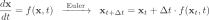
The bottleneck is double: unpredictable emergence, laborious tools
Science bottleneck
- Structure → behavior is opaque
- Goal-directed design = inverting an opaque map
Tooling bottleneck
- Specialized languages: DYNAMO (1960s), STELLA (proprietary, visual)
- Labor-intensive workflows; feedback relationships navigated by hand
- Limits adoption exactly where insight is needed most
CEDAR in one picture
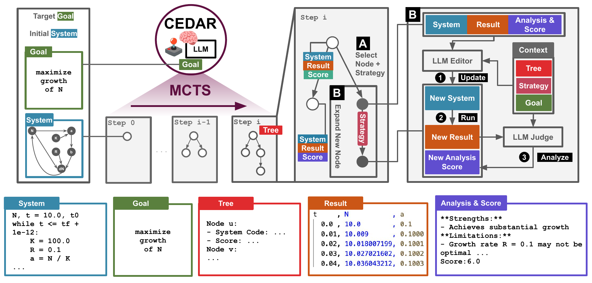
Represent systems as runnable Python, not a DSL
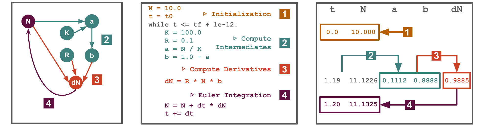
- One representation unifies DYNAMO and STELLA models
- Restricted subset + domain primitives + inline docs
- LLMs already speak Python fluently
- Editing code = editing dynamics: variables, feedback links, equations
Holds all 20 classical systems we study: World Dynamics + 19 from Modeling Dynamic Biological Systems (20–69 integrated variables each).
LLM Judge as fitness, LLM Editor as variation
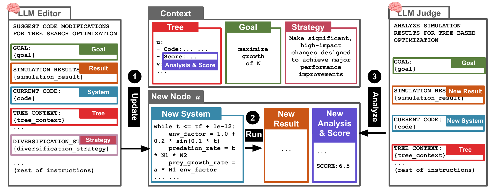
Editor (variation operator): structural edits (add/remove state variables, rewire feedback, rewrite equations), guided by strategy, goal, and the parent's analysis.
①→② the Editor writes a new system; running it produces a fresh execution record.
Judge (fitness function): reads the record; returns a bounded score and an analysis that feeds the next edit. A generate-and-evaluate loop, in the spirit of evolutionary computation.
The search tree is a structured population
Generalized UCT selection
- exploration () + depth bonus () + progressive widening ()
- nodes re-expandable until , unlike vanilla MCTS
- formally a principled MCTS variant: Editor = stochastic transition kernel, Judge = noisy value function
8 expansion strategies, sampled uniformly
breakthrough / aggressive / amplify / exploratory / targeted / contrarian / balanced / conservative
In our runs
backends: Claude Sonnet 4.5 / GPT-5.1
20 selections × 5 candidates
= 100 expansions per search
The goal is self-conflicting: pushing one objective breaks the others
- World Dynamics already sits near a Pareto frontier
- Maximize population only (magenta) ⇒ resources crash, pollution explodes
- Minimize depletion only (orange) ⇒ population stagnates
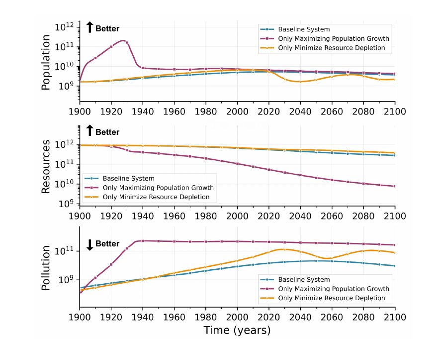
CEDAR finds sustainable worlds: a different one per LLM
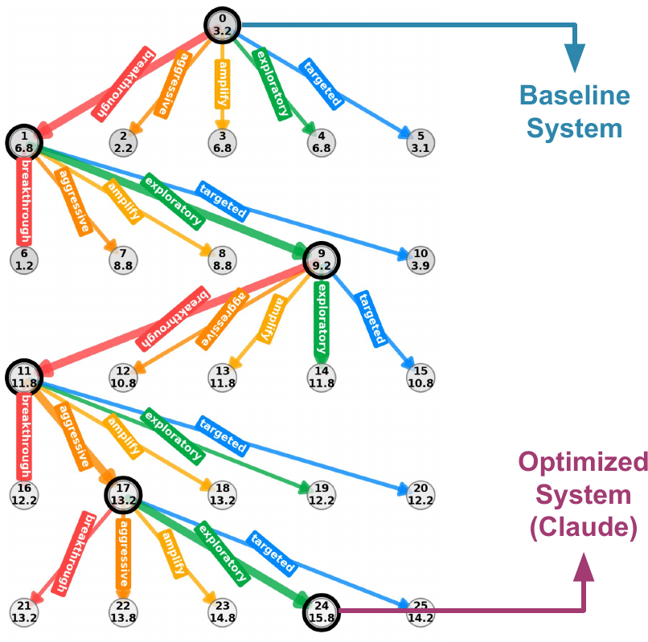
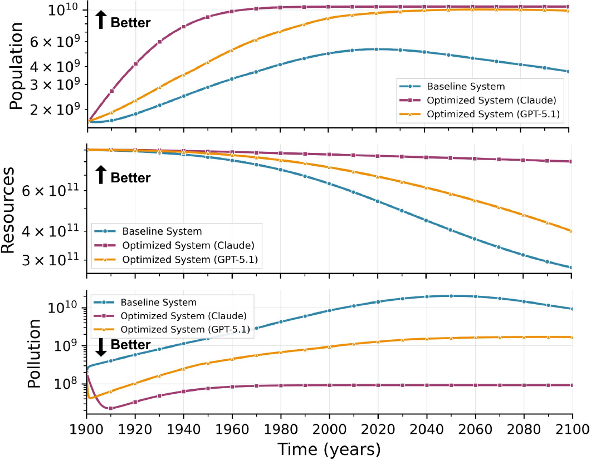
- The tree (left) steers toward higher Judge scores; best path highlighted
- Optimized systems (right): population ↑, resources ↑, pollution ↓, all three jointly
- Claude and GPT-5.1 discover structurally distinct trade-offs (population-first vs. resource-first)
CEDAR with no formulae beats Optuna with the full formulae
Task: fit the record of a stochastic population model, starting from a bare skeleton. Optuna gets 100 trials and up to the full ground-truth equations: strictly more prior structure than CEDAR.
| Method | Formulae | L1 ↓ | DTW ↓ |
|---|---|---|---|
| Optuna | none | 29.06 | 5503.68 |
| Optuna | simple | 26.01 | 4927.94 |
| Optuna | full | 3.71 | 477.52 |
| CEDAR (Claude) | none | 3.29 | 757.21 |
| CEDAR (GPT-5.1) | none | 2.22 | 433.13 |
Without formulae, Optuna collapses to near-constant populations; CEDAR tracks the peaks and dips within ground-truth variability.
Vs. Optuna (full): Claude wins on L1 only; GPT-5.1 wins on both metrics.
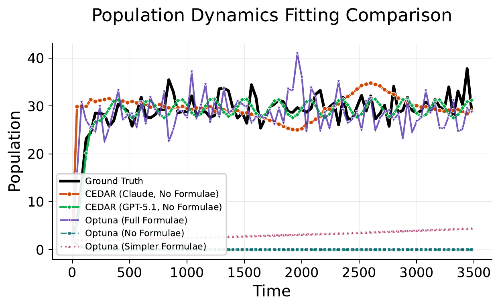
A population of explained solutions, not a single point
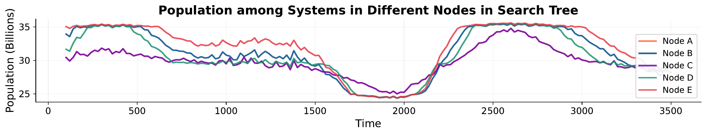
Every step is narrated.
For artificial life: range, access, and a record of why
- Open-ended exploration. A branching tree preserves structurally distinct emergent behaviors, valuable when the range of behaviors matters, not just one optimum.
- Accessibility. Natural-language goals + Python representation lower the barrier that DYNAMO/STELLA workflows impose: complex-systems modeling for more domains, faster decisions.
- Transparency. LLM analyses document how structural edits steer emergent behavior, step by step: a new handle on the structure-to-emergence question.
One edit cascades across ~45 coupled variables: design needs search

More method details worth mentioning.
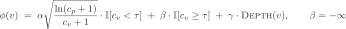
- Editor: learned transition kernel over programs
- Judge: bounded, noisy value function
Engineering for stability
- Adaptive context subsampling within budget L; O(NL) total
- Structured outputs, up to 3 retries per call
- Crashed or NaN runs scored low, so the tree backtracks
The ground truth is itself volatile: CEDAR fits within the seed band
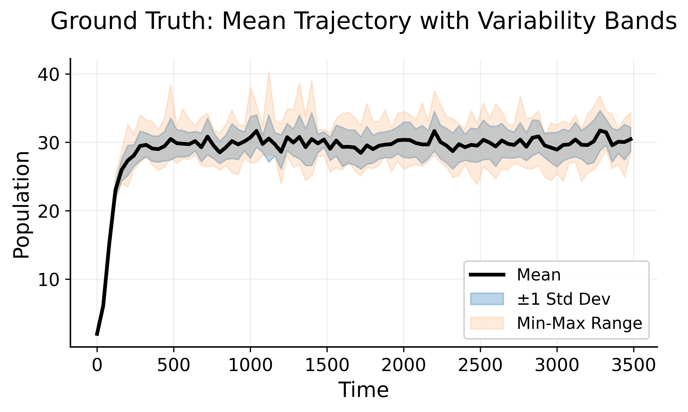
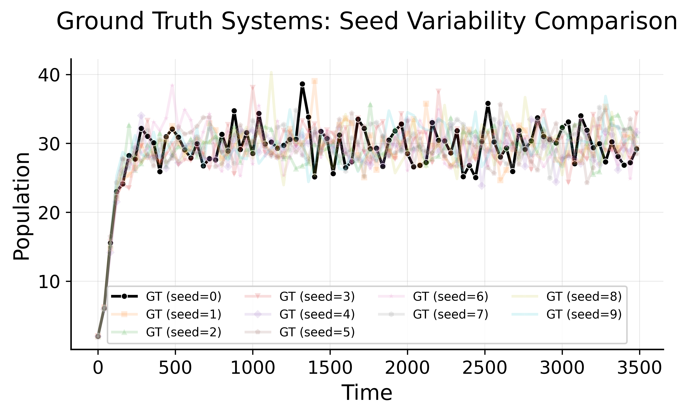
10 random seeds of the ground truth: the stochastic death rate makes the volatility intrinsic, and CEDAR's fit sits within that band.
| Method | Formulae | L1 ↓ | DTW ↓ |
|---|---|---|---|
| Optuna (Run 1) | full | 3.71 | 477.52 |
| Optuna (Run 2) | full | 4.26 | 605.05 |
| CEDAR (GPT-5.1) | none | 2.22 | 433.13 |
A second full-formulae Optuna run does not close the gap: parameter fitting with the true equations still trails CEDAR (noise floor, sensitive nonlinear landscape).
Full Judge and Editor transcripts are released; scores and reasoning align on human inspection.
Limits, and what comes next
Limits
- Judge scores what a same-class LLM edited: circularity risk for abstract goals
- Trends, not tight statistics; two systems studied in depth
- Judge rationales make the search inspectable, not (yet) a verified causal account of emergence
- Convergence guarantees for MCTS-with-LLMs: open
Next
- Systematic benchmarks vs. classical evolutionary & multi-objective methods
- When is LLM variation/evaluation necessary, not merely helpful?
- More systems, more domains
Let the agents grow the system.
Questions?
Yingtao Tian / Sakana AI / alantian@sakana.ai / @alanyttian